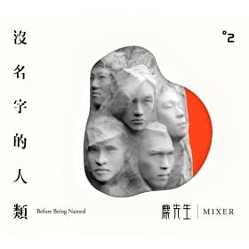
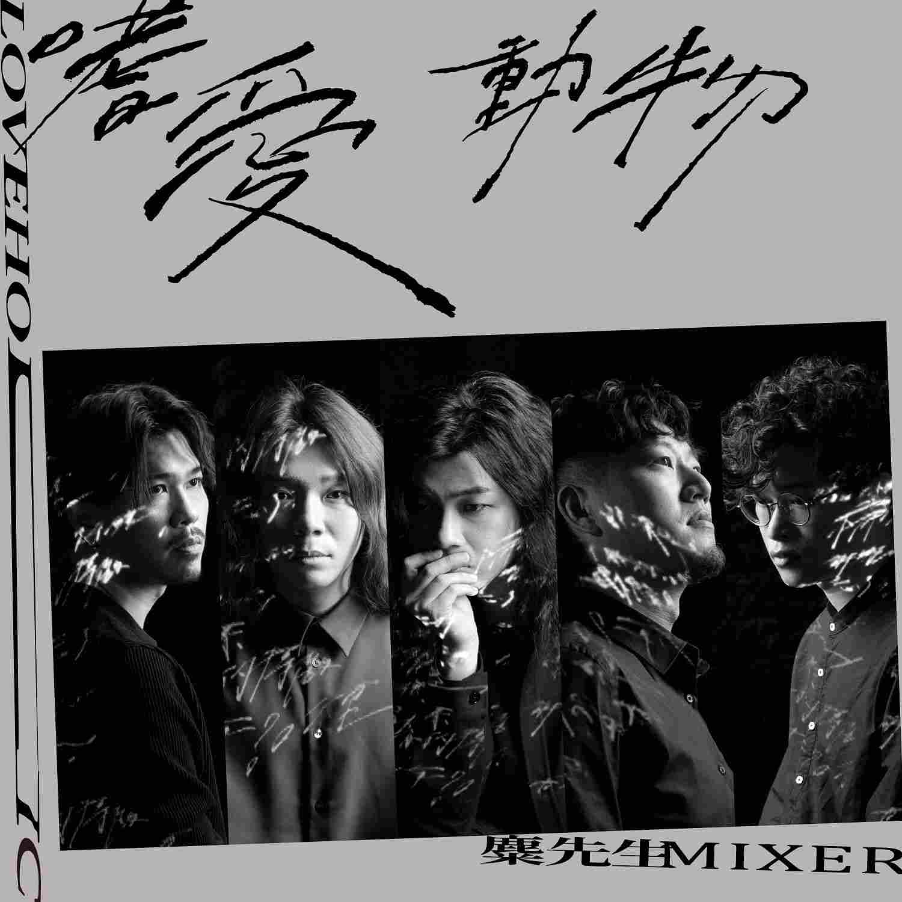

沒名字的人類 (2015/03/27發行)
這張最新專輯【沒名字的人類】所要傳達的主軸就是"團結”二個字。在過去一年半的時
間，麋先生不忘初衷的從感受出發，一個音符一道筆劃的記錄著這段時間對於周遭環境
的感受，有對未來的迷惘，有對現象的反諷，也有對家的眷戀…而最終都是回歸到一個主
題"團結"－要為著相同的理念凝聚起來，一起追求更多更好的可能！主唱聖皓說著:麋先
生各自五位團員拆開，我也只能是我，但當我們五人有著相同的理念，因為喜歡音樂而聚
在一起成為麋先生後，我們就可以一起創造出更多更好的可能，更希望藉由我們的音樂可
以影響更多人。2013年帶著自己的音樂用一場場現場演出方式開展人生的麋先生，經過一
年半的磨練，在2015年3月帶著最新作品【沒名字的人類】上台，一起點燃群體的火花，所
到之處，全場就是一個舞台，不分台上、台下。
野生 (2016/10/28發行)
「野性與生存間的平衡，唯一的遊戲規則，就是讓所有人遵守你的規則」
帶著自己未經馴化的樣貌，走進充滿規則的遊戲中，在遊樂園中當個盡情遊玩的孩子，或是當
個汲汲找著出口的大人?你想在規則中學習生存，還是在生存中訂下規則?麋先生這4年來憑藉
著強大的現場舞台爆發力及感染力，場場演出步步征服越來越多歌迷的心。麋先生的音樂風格，
每每都在詞、曲、編曲三者毫不保留的加乘激盪下，炸裂碰撞出讓人耳目一新的感受，時而省
思、時而狂放，交錯刻畫出這一世代的看似複雜卻又單純的靈魂。2014年獲得第25屆金曲獎最
佳樂團，2016年再度入圍第27屆金曲獎最佳樂團。第三張創作專輯《野生》，顛覆你對野生的
想像，專輯中將野和生兩個字拆開探討。生，是否為了生存而已向規則妥協?野，是否在規則中保
有自己的樣子?「野」「生」是否對立，是否和平共存?

嗜愛動物 (2020/10/08發行)
麋先生睽違四年發行第四張專輯《嗜愛動物》，專輯內容維持麋先生一貫的社會觀察視角，對所
見所聞提出發人省思的觀點，然而這次與以往不同的是，用更放鬆、更自信、直接第一人稱直球
進壘的口吻，坦白直視各種面向後的接納與見解，因此專輯圍繞著愛與人心，講述看穿表象謊言後，
人類就是愛的動物。直接了當將“愛”設定為《嗜愛動物》專輯核心概念，並且創作風格有所變化，以
前總想顧及每個人的想法、每一步都要做到讓人沒話說，到最後作品就像高高在上的全知觀點在看待
人事物，多多少少有疏離感。而《嗜愛動物》這張專輯，團員在製作上的不同環節，一開始就比較直覺、
自我、回歸凡人視線不去預設太多其他意見，最後撞擊出來的成品，自然而然如同朋友一般，與聽眾討
論觀點、抒發感想。